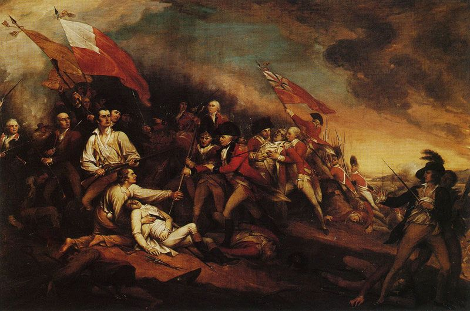
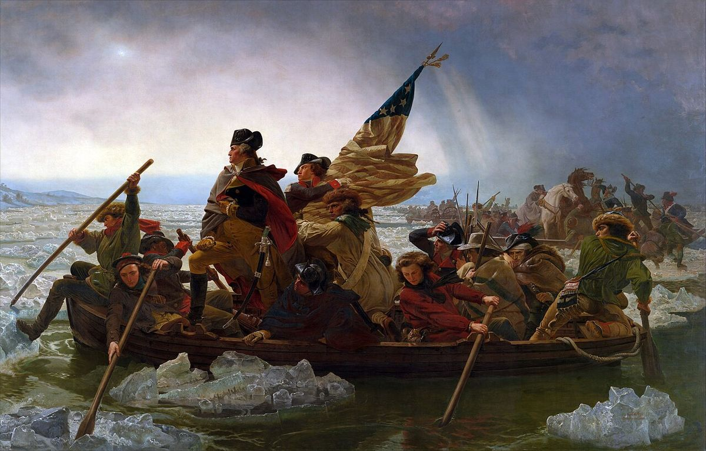
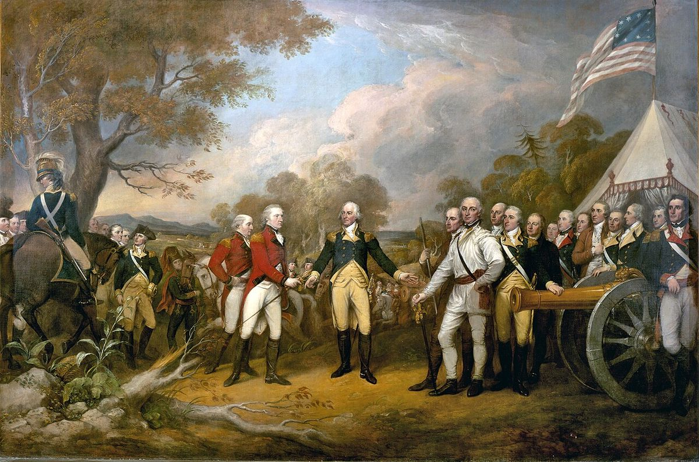
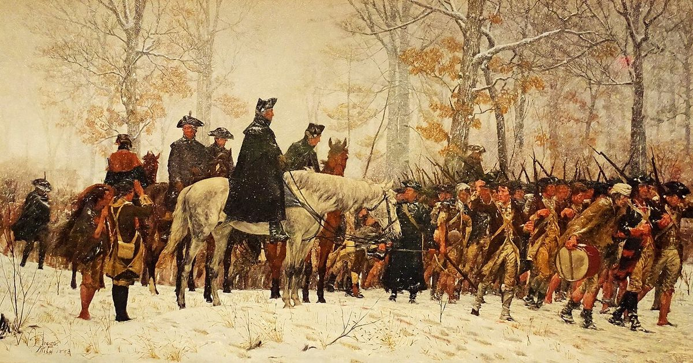
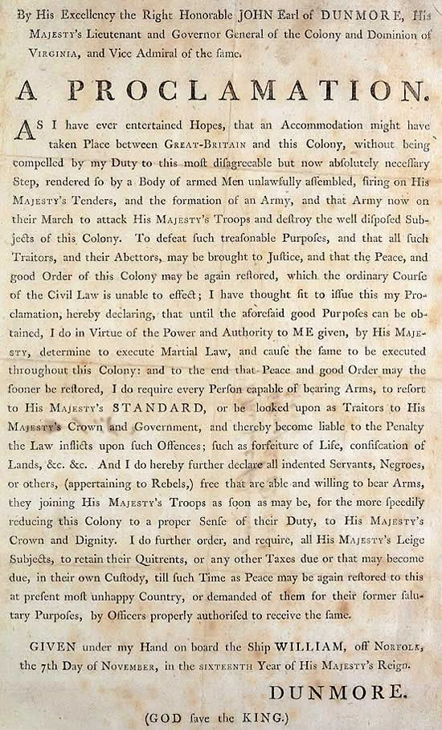
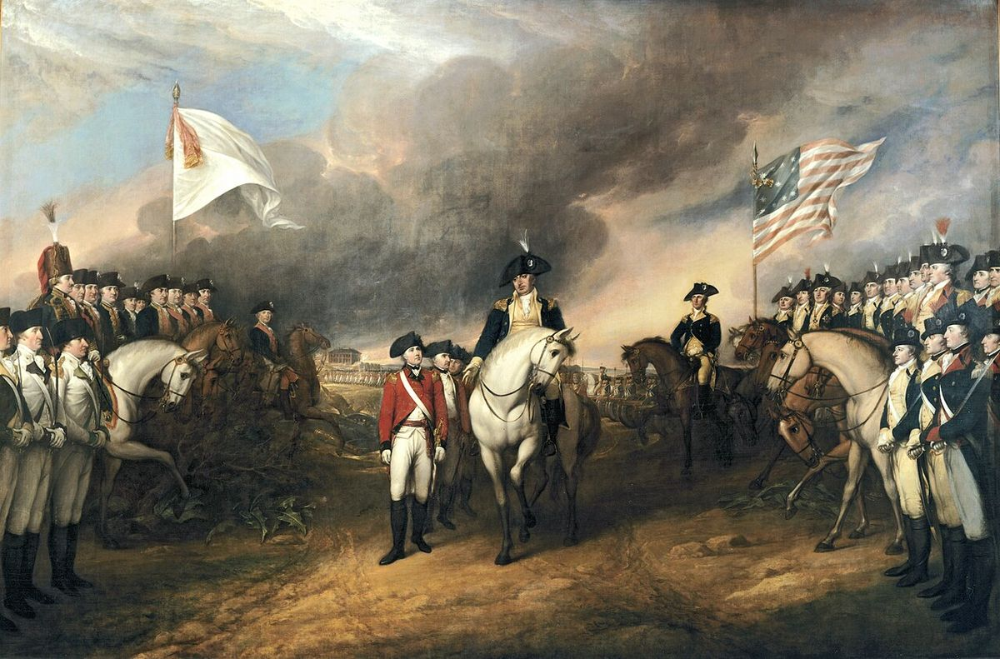
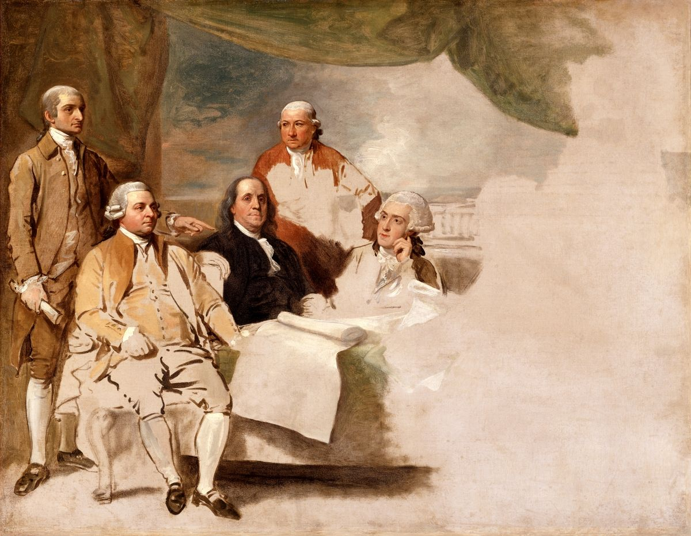

The Revolutionary War in Seven Stops, 1775 to 1783
Eight years of war, from the first big battle to the peace treaty. At each stop, read what happened, then meet a hidden voice: someone the usual story leaves out.
Pick your reading
June 17, 1775
Bunker Hill

In June 1775, the war had just begun.
American soldiers dug in on a hill near Boston.
The British attacked the hill three times.
They won the hill on the third try.
But more than 1,000 British soldiers were killed or hurt.
That was about twice as many as the Americans lost.
Now both sides knew this war would be long.
Two months after Lexington and Concord, American soldiers built walls of dirt on a hill near Boston.
On June 17, 1775, British soldiers charged up the hill, and the Americans pushed them back twice.
On the third charge, the Americans ran low on gunpowder and had to leave.
The British took the hill, but more than 1,000 of their soldiers were killed or wounded.
That was about twice the American losses.
The battle showed that ordinary colonists could stand up to the British army.
On June 17, 1775, two months after Lexington and Concord, British troops attacked American soldiers who had dug in on the hills above Boston.
Most of the fighting was actually on nearby Breed's Hill, but the battle kept the name Bunker Hill.
The Americans drove back two charges before their gunpowder ran low, and the British took the hill on their third.
The price was staggering: more than 1,000 British soldiers were killed or wounded, about twice the American losses.
Ordinary colonists had stood up to the British army, and both sides now expected a long and bloody war.
On June 17, 1775, British regulars attacked the fortifications that New England militia had thrown up overnight on the heights above Charlestown, across the river from Boston.
Although the battle is remembered as Bunker Hill, most of the fighting took place on neighboring Breed's Hill, where the defenders repelled two frontal assaults before their powder gave out and the third carried the position.
Britain held the field, yet more than 1,000 of its soldiers were killed or wounded, roughly twice the American losses, and its commanders drew the sobering conclusion that the rebellion would not collapse after one demonstration of force.
Historians also note who stood in the American lines: Black soldiers such as Peter Salem and Salem Poor fought there, a reminder that the army of 1775 was more varied than later paintings suggest.
Think About It
The British won the hill. Why did the battle still worry them?
December 26, 1776
Trenton

By December 1776, Washington's army had lost a lot of fights.
Many soldiers were ready to go home.
On Christmas night, the army crossed an icy river.
The river is called the Delaware.
In the morning, they surprised the enemy at a town called Trenton.
They took about 900 soldiers as prisoners.
This win gave the army hope and kept the Revolution going.
In 1776, Washington's army lost New York and retreated across New Jersey.
Many soldiers planned to go home when their time in the army ended at the end of the year.
On Christmas night, Washington led his men across the icy Delaware River.
At dawn on December 26, they surprised the enemy camp at Trenton and captured about 900 soldiers.
The win was small, but it gave soldiers a reason to stay.
It kept the Revolution alive.
By the end of 1776, Washington's army had lost New York, retreated across New Jersey, and shrunk as discouraged soldiers went home.
Many of the men who remained could leave when their enlistments expired at the end of the year.
On Christmas night, Washington led his army across the ice-choked Delaware River, and at dawn on December 26 it surprised the camp of German soldiers hired by Britain at Trenton, New Jersey.
The Americans captured about 900 soldiers.
The victory was small, but it came when the army was close to falling apart, and it gave soldiers a reason to stay and kept the Revolution alive.
Days before the attack, Thomas Paine published The American Crisis, which opens, "These are the times that try men's souls."
By December 1776 the Continental Army had lost New York, retreated across New Jersey, and dwindled through desertion and expiring enlistments, so that by the end of the year it faced the real possibility of simply dissolving.
Washington's night crossing of the Delaware and his dawn attack on the Hessian garrison at Trenton on December 26 produced about 900 prisoners, a modest haul whose political and psychological effect far outweighed its military size.
The famous painting is itself a source to question: Leutze painted it in 1851, the flag shown was not adopted until 1777, and no commander would have stood upright in a small boat on an icy river.
Think About It
Why did one small win matter so much in December 1776?
October 17, 1777
Saratoga

In 1777, a British army marched south from Canada into New York.
American soldiers trapped it.
This was near a town called Saratoga.
On October 17, 1777, the British army gave up.
About 6,000 soldiers surrendered.
This was the turning point of the war.
France saw that the Americans could win.
In 1778, France joined the war to help the Americans.
France sent money, soldiers, and ships.
In 1777, the British planned to cut New England off from the other colonies.
A British army marched south from Canada into New York.
American soldiers fought it in two battles near Saratoga and then surrounded it.
On October 17, 1777, about 6,000 British soldiers surrendered.
Saratoga was the turning point of the war.
It showed France that the Americans could win, and in 1778 France joined the war with money, soldiers and ships.
In 1777, Britain tried to split the colonies by sending an army south from Canada to cut New England off from the rest.
In New York, American forces stopped that army in two battles near Saratoga and then surrounded it.
On October 17, 1777, the British general John Burgoyne surrendered about 6,000 soldiers.
Saratoga became the turning point of the war.
France, Britain's old rival, now believed the Americans could win, and in 1778 it joined the war with money, soldiers and ships.
General John Burgoyne's 1777 campaign aimed to sever New England from the other colonies by driving south from Canada along the Hudson River.
Instead, his army was checked in two engagements near Saratoga, encircled by a growing American force, and compelled to surrender about 6,000 soldiers on October 17, 1777.
The campaign also divided the Haudenosaunee, the Six Nations: at Oriskany that August, Mohawk and Seneca warriors fought alongside the British while Oneida warriors fought beside the Americans.
Historians call Saratoga the turning point less for the battle itself than for its consequences abroad, since it persuaded France, Britain's old rival, to sign an alliance in 1778 and commit money, soldiers and a navy.
Think About It
Why did a win in New York change what France did?
Winter 1777–1778
Valley Forge

In the winter of 1777, the army camped at Valley Forge, Pennsylvania.
About 12,000 soldiers stayed there.
They did not have enough food.
Many had no warm clothes or shoes.
About 2,000 soldiers died of disease.
But the army did not quit.
In the spring, Baron von Steuben trained the soldiers.
They came out a stronger army.
In December 1777, about 12,000 soldiers marched into Valley Forge, Pennsylvania, to camp for the winter.
They were short of food, clothes and shoes, and they built small log huts to stay warm.
About 2,000 soldiers died of disease.
Still, the army did not fall apart.
In the spring, Baron von Steuben, an officer from Germany, trained the soldiers to march and fight together.
They left Valley Forge a stronger army.
In December 1777, about 12,000 soldiers of the Continental Army marched into winter camp at Valley Forge, Pennsylvania.
Congress and the states struggled to send supplies, so the soldiers went short of food, clothing and shoes while they built rows of log huts.
About 2,000 soldiers died of disease that winter.
Yet the army did not quit, and in the spring Baron von Steuben, a former Prussian officer, drilled the soldiers in how to march, load and fight as one force.
The army that left Valley Forge was smaller but tougher and better trained.
On December 23, 1777, Washington warned Congress that he had "no less than 2898 Men now in Camp unfit for duty, because they are barefoot and otherwise naked."
About 12,000 soldiers wintered at Valley Forge, and about 2,000 died of disease, chiefly typhus, typhoid, dysentery and influenza spread through crowded huts.
Historians stress that the suffering came less from extreme cold than from a supply system that broke down between Congress, the states and the army's own commissaries.
The camp is remembered as a turning point in another sense as well: under Baron von Steuben's drill that spring, the Continentals became a disciplined, professional army.
Think About It
Why didn't the army quit at Valley Forge?
November 1775 and June 1779
Britain Offers Freedom

Britain needed more soldiers.
In 1775, Lord Dunmore ran Virginia for the king.
He made a promise to enslaved people.
He said they could be free.
First they had to run away from a Patriot.
Then they had to fight for Britain.
In 1779, a British general made the offer bigger.
Thousands of enslaved people escaped to the British side.
Both sides talked about liberty.
For many enslaved people, Britain was the side offering freedom.
In November 1775, Lord Dunmore, the royal governor of Virginia, made an offer.
Enslaved people owned by Patriots would be free if they escaped and fought for Britain.
Patriot slaveholders were angry and afraid.
In 1779, a British general, Henry Clinton, made the offer wider.
Thousands of enslaved people escaped to British lines, risking their lives.
Both sides talked about liberty.
But for many enslaved people, the British side was the one that offered freedom.
In November 1775, Lord Dunmore, the royal governor of Virginia, promised freedom to enslaved people owned by Patriots if they escaped and fought for Britain.
Hundreds joined a unit he called the Ethiopian Regiment.
In 1779, the British general Henry Clinton widened the offer, and thousands of enslaved people escaped to British lines.
Britain made these offers to weaken the Patriots, not to end slavery, and it kept slavery in its own colonies.
Still, both sides talked about liberty, and for many enslaved people the British side was the one offering freedom.
Dunmore's proclamation of November 7, 1775, declared "all indented Servants, Negroes, or others, (appertaining to Rebels,) free that are able and willing to bear Arms, they joining His Majesty's Troops."
Hundreds of men enlisted in what Dunmore called the Ethiopian Regiment, and in 1779 General Henry Clinton's Philipsburg Proclamation extended the promise to anyone enslaved by Patriots who reached British lines, whether or not they bore arms.
Thousands escaped, though historians still debate how many, and many died of smallpox in crowded camps.
The offers were a weapon of war rather than a principle, since Britain kept slavery in its own colonies, yet they forced Patriots to confront what their own language of liberty meant to the people they enslaved.
Think About It
To an enslaved person in Virginia, which side looked like the side of liberty, and why?
October 19, 1781
Yorktown

In 1781, a British army camped at Yorktown, Virginia.
The town was next to the water.
American and French armies trapped it on land.
French ships blocked help from the sea.
The British general Cornwallis gave up.
He surrendered more than 7,000 soldiers.
It was the last big battle of the war.
In 1781, the British general Cornwallis moved his army to Yorktown, Virginia, on the coast.
He waited for British ships to bring help.
Instead, a French fleet blocked the way from the sea.
American and French armies dug trenches around the town and moved closer each day.
On October 19, 1781, Cornwallis surrendered more than 7,000 soldiers.
It was the last major battle, and Britain began to give up on winning the war.
In 1781, the British general Charles Cornwallis moved his army to Yorktown, Virginia, on the coast, expecting the British navy to bring help.
Instead, a French fleet took control of the bay and blocked help from the sea, while American and French armies surrounded the town on land.
Some of the Americans' best information came from James Armistead, an enslaved man who spied inside the British camp.
On October 19, 1781, Cornwallis surrendered more than 7,000 soldiers.
It was the last major battle of the war, and Britain began to give up on winning it.
Cornwallis fortified Yorktown in the summer of 1781 on the assumption that the Royal Navy controlled the Chesapeake, but a French fleet under the Comte de Grasse closed the bay while Washington and the French general Rochambeau marched their combined armies south.
Intelligence gathered by James Armistead, who posed as a runaway to work inside the British camp, helped the allies understand Cornwallis's position.
After weeks of siege, Cornwallis surrendered more than 7,000 soldiers on October 19, 1781.
Historians emphasize that the victory was as much French as American, and that although fighting continued on the frontier and at sea, Yorktown broke Britain's will: Lord North's government fell the following March.
Think About It
Who made the win at Yorktown possible, and how?
September 3, 1783
Treaty of Paris

On September 3, 1783, Britain signed a peace treaty.
It is called the Treaty of Paris.
It said the United States was independent.
The new country reached west to the Mississippi River.
The war was over.
But Native nations were not part of the treaty.
Britain gave away land where they lived.
About 60,000 Loyalists left the United States after the war.
On September 3, 1783, Britain signed the Treaty of Paris.
The treaty said the United States was independent, and its land now reached west to the Mississippi River.
The war was over, but it had been expensive, and the new country owed a lot of money.
Native nations were not part of the treaty, even though Britain gave away land where they lived.
About 60,000 Loyalists, colonists who stayed loyal to the king, left the United States.
On September 3, 1783, almost two years after Yorktown, Britain signed the Treaty of Paris and recognized the United States as independent.
The new nation's land reached west to the Mississippi River.
One thing is true about all wars: they are expensive, and the United States began its life deep in debt.
Native nations were not part of the treaty, even though Britain gave away land where they lived.
About 60,000 Loyalists, many of whom had lost their homes and property, left the United States for Canada, Britain and the Caribbean.
The Treaty of Paris, signed on September 3, 1783, recognized American independence and drew the new nation's western boundary at the Mississippi River.
Benjamin West's painting of the negotiators was never finished because the British negotiator, Richard Oswald, refused to pose, an apt image of a peace that one side signed reluctantly.
Britain's Native allies, who had not been consulted, learned that their lands had been handed to the United States, and many regarded the treaty as a betrayal.
About 60,000 Loyalists left the country, among them several thousand Black Loyalists who had been promised freedom, which is why historians increasingly describe the Revolution as a civil war with winners and losers on every side.
Think About It
Who won with the Treaty of Paris, and who lost?
Whose Stories Aren’t Told?
Every one of these people and groups shaped the Revolution, and most of them are left out of the usual story. Each one is a podcast topic.
Talk with your crew. Pick your top three.